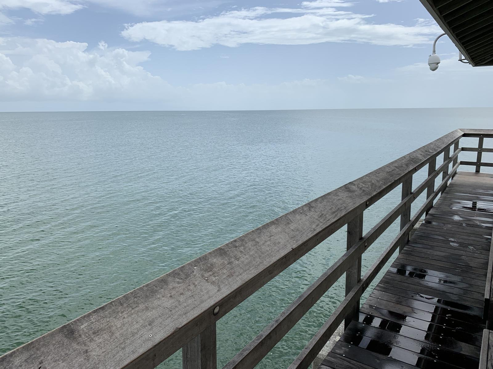
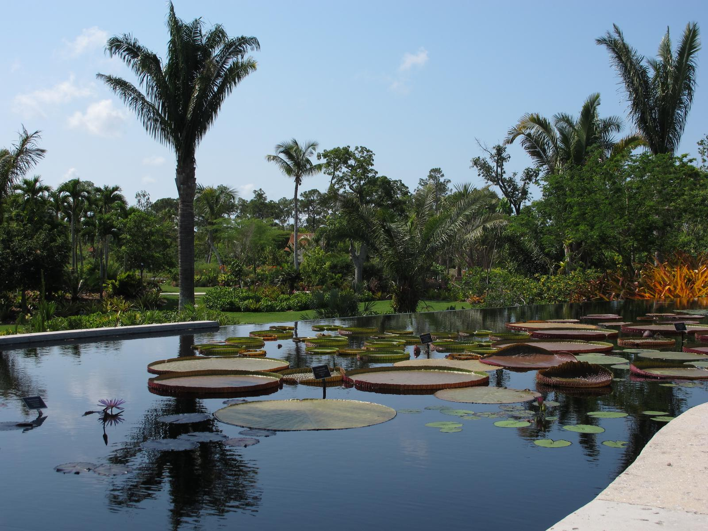
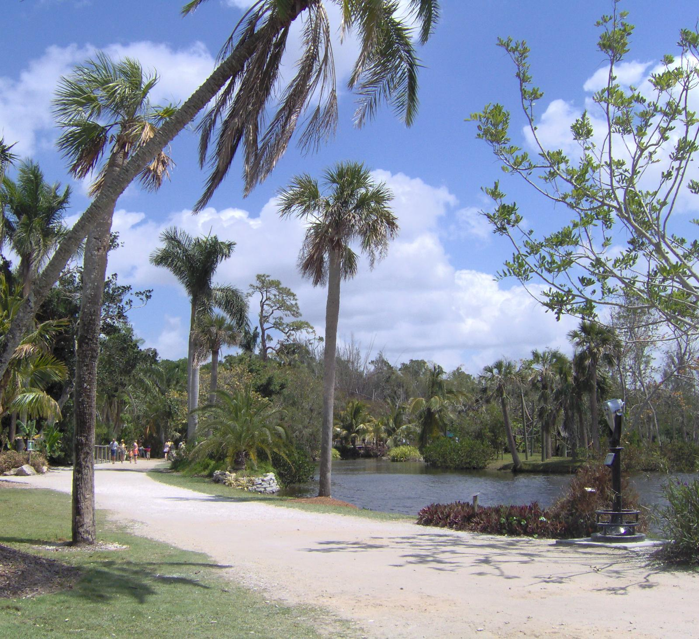
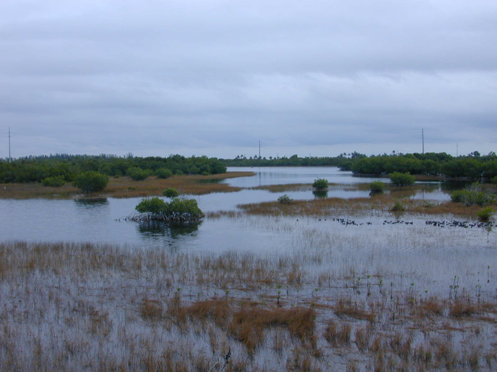

TRIP OVERVIEW
Day 1 – Naples Pier · Naples Botanical Garden · Naples Zoo
Day 2 – Corkscrew Swamp Sanctuary · Naples Museum of Art
Day 3 – Delnor-Wiggins Pass State Park · Rookery Bay National Estuarine Research Reserve
Day 1
🏨 From Hotel: 🚶 15 min · 🚕 5 min → Naples Pier
1. Naples Pier
↳ The defining landmark of Naples, a 1,643-foot public fishing pier extending into the Gulf of Mexico. Built in 1888, it remains a favorite gathering spot for families, anglers, and sunset watchers — pristine white sand beach on both sides, dolphins and pelicans in the water, and unobstructed ocean views.

🚕 15 min → Naples Botanical Garden
2. Naples Botanical Garden
↳ A 170-acre garden showcasing plant collections from around the world — Brazilian gardens with tropical foliage, Mediterranean sections with olive trees and lavender, and an Asian garden with water features. A peaceful retreat where you can spend hours wandering themed landscapes.

🚕 18 min → Naples Zoo
3. Naples Zoo at Caribbean Gardens
↳ A 43-acre zoo built within a former botanical garden, with over 1,300 exotic animals from around the world. Natural habitat exhibits, primate islands, and a free-flight aviary create immersive experiences. The alligator feeding shows are crowd favorites.

🚕 20 min → hotel
Day 2
🏨 From Hotel: 🚕 22 min → Corkscrew Swamp Sanctuary
1. Corkscrew Swamp Sanctuary
↳ A 2.25-mile boardwalk through pristine cypress swamp and hardwood forest managed by the Audubon Society. One of the largest old-growth cypress forests in the United States, home to alligators, bald eagles, and wildlife visible from the elevated wooden walkway without disturbing the ecosystem.

🚕 25 min → Naples Museum of Art
2. Naples Museum of Art
↳ A modern museum in downtown Naples with rotating exhibitions of contemporary and classical art from around the world. The building itself is architecturally striking, and the collection spans sculpture, painting, and photography in gallery spaces overlooking a serene courtyard.
No pictures found.
🚕 18 min → hotel
Day 3
🏨 From Hotel: 🚕 12 min → Delnor-Wiggins Pass State Park
1. Delnor-Wiggins Pass State Park
↳ A 166-acre beachfront park with pristine white sand and clear Gulf waters. Mangrove forests, unspoiled dunes, and excellent shell collecting. Quieter than Naples Pier, it is ideal for swimming, picnicking, and exploring natural coastal habitat.

🚕 28 min → Rookery Bay
2. Rookery Bay National Estuarine Research Reserve
↳ A 110,000-acre marine sanctuary protecting mangrove shorelines and shallow estuary. The visitor center offers guided walks and rentals into the mangrove channels where you encounter manatees, dolphins, and hundreds of bird species. A pristine window into Florida's fragile coastal ecosystem.

🚕 25 min → hotel
🗓️ Weekly Closures
Museums & Galleries · Closed Monday
📅 Tours
Viator
↳ A two-hour evening sail along the Naples coast with snacks and drinks included. Watch dolphins play in the wake and the sun set over the Gulf.
🕐 3:00pm · ⏳ 2 hr · 👥 small group
🚕 15 min
GetYourGuide
No qualifying tours on GetYourGuide in Naples, Florida.
TripAdvisor
No qualifying tours on TripAdvisor in Naples, Florida.
☕ Cappuccino
🫕 Restaurants Near Hotel
↳ Gulf-front casual dining with seafood focus and outdoor terrace.
🏛️ Daily 11:30am - 10:00pm
🚶 18 min · 🚕 7 min
↳ Fresh Gulf fish and clam specials, waterfront casual dining.
🏛️ Daily 11:30am - 9:30pm
🚶 20 min · 🚕 8 min
↳ Fine dining steaks and seafood, polished service.
🏛️ Daily 4:00pm - 10:00pm
🚕 14 min
🍽️ Downtown Restaurants
↳ Italian, seasonal pasta, house-made pastries.
🏛️ Tuesday - Sunday 5:00pm - 10:00pm
↳ Italian, open courtyard, long-standing local favourite.
🏛️ Daily 11:30am - 10:00pm
↳ Persian bistro, top-rated downtown neighbourhood dining.
🏛️ Tuesday - Sunday 4:00pm - 9:30pm
↳ Contemporary American, craft cocktails, rooftop bar.
🏛️ Daily 11:30am - 10:00pm
🍮 Local Tastes
Grouper Sandwich
↳ Iconic Florida Gulf fish, fried or blackened and served on a roll — the casual waterfront dish that defines the Gulf Coast. Every seafood shack and marina bar has its own version.
Stone Crab Claws
↳ Seasonal Florida delicacy October–May — claws only, served chilled with mustard sauce. One of the most prized Gulf shellfish; the crab is released alive after harvesting.
Key Lime Pie
↳ The Florida signature dessert — tart citrus filling made with Key lime juice and sweetened condensed milk in a graham cracker crust. The authentic version is pale yellow, not green.
🎭 Shows, Performances & Concerts
Naples Philharmonic
↳ Classical and pops concerts at the Artis—Naples campus, the city's premier performing arts center.
🚕 18 min
🚆 Train Stations Near Hotel
No passenger rail service in Naples.
⛲️ Day Trips by Train
No day trips by train from Naples.
⭐ Michelin Restaurants
No Michelin-starred restaurants in Naples; recognition in this guide limited to major metro areas.